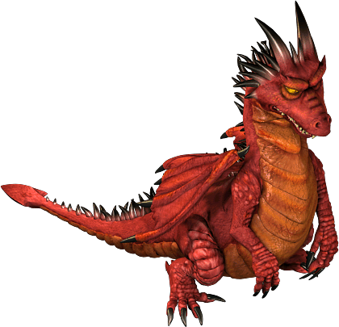
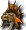
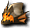

龍帽－克里莫拉克夏-雷歐加爾特-斯科爾菲吉-其他
名稱為橘色的是可以附魔的物品。另外，未鑑定名稱是該道具在未鑑定狀態下的名稱。
提供情報或編輯請求，請到情報提供公佈欄、編輯公佈欄。
龍帽子

克里莫拉克夏| 名稱 | 價格 | 限制 | 職業 | Wei | 取得方式 |
| 火龍護目鏡 | 100,000 | Lv95,FLv40 | 戰修盜騎阿聖魔預吟 | 4 | Q:被選中者褒章 |
AC-5、DEX+4、HP+30、SP+70
火龍的防護具
| 名稱 | 價格 | 限制 | 職業 | Wei | 取得方式 |
 火龍頭環 火龍頭環 | 100,000 | Lv95,FLv40 | 戰修盜騎阿聖魔預吟 | 3 | Q:被選中者褒章 |
AC-5、INT+5、WIS+5、MP+70
火龍的防護具
| 名稱 | 價格 | 限制 | 職業 | Wei | 取得方式 |
| 火龍魔法帽 | 100,000 | Lv95,FLv40 | 戰修盜騎阿聖魔預吟 | 3 | Q:被選中者褒章 |
AC-5、INT+5、WIS+5、MP+70
火龍的防護具
| 名稱 | 價格 | 限制 | 職業 | Wei | 取得方式 |
| 火龍頭盔 | 100,000 | Lv95,FLv40 | 戰修盜騎阿聖魔預吟 | 3 | Q:被選中者褒章 |
AC-5、INT+5、WIS+5、MP+70
火龍的防護具(白字但可附魔 不可用破魔捲軸、可用除魔捲軸 bug?)
| 名稱 | 價格 | 限制 | 職業 | Wei | 取得方式 |
| 火龍面具 | 100,000 | Lv95,FLv40 | 戰修盜騎阿聖魔預吟 | 3 | Q:被選中者褒章 |
AC-5、INT+5、WIS+5、MP+70
火龍的防護具
| 名稱 | 價格 | 限制 | 職業 | Wei | 取得方式 |
| 火龍頭巾纏帽 | 100,000 | Lv95,FLv40 | 戰修盜騎阿聖魔預吟 | 3 | Q:被選中者褒章 |
AC-5、STR+5、CON+5、HP+40、SP+30
火龍的防護具
| 名稱 | 價格 | 限制 | 職業 | Wei | 取得方式 |
| 龍鱗王冠(男)龍鱗后冠(女) | 150,000 | Lv95,FLv35 | 戰修盜騎阿聖魔預吟 | 6 | 火龍升級 |
| 能力 | AC-6、MC-3、STR+2、CON+2、DEX+2、HP+50、SP+30+隨機(MC-1～5、HP+3～25、MP+5～20、SP+5～20) | ||||
| 備註 | 麻痺防禦(PCount:50)以火龍之鱗強化的帽子。 | ||||
雷歐加爾特的靈魂
| 名稱 | 價格 | 限制 | 職業 | Wei | 取得方式 |
| 忘卻的雷歐加爾特頭盔(男) | 27,300 | Lv105,FLv71 VLv21,BLv21 | 戰修盜騎阿聖魔預吟 | 8 |
AC-9 MC-7 HP163 SP94 STR7 DEX7 +OP
融入了雷歐加爾特之力的頭盔。死亡時消失
| 名稱 | 價格 | 限制 | 職業 | Wei | 取得方式 |
| 被封印的雷歐加爾特頭盔(男) | - | Lv105,FLv71VLv21,BLv21 | 戰修盜騎阿聖魔預吟 | 8 |
AC-4 MC-2 HP120 SP50 STR4 CON3 DEX3 +OP
封印了雷歐加爾特之力的頭盔。
| 名稱 | 價格 | 限制 | 職業 | Wei | 取得方式 |
| 雷歐加爾特頭盔(男) | 273,000 | Lv105,FLv71VLv21,BLv21 | 戰修盜騎阿聖魔預吟 | 8 |
AC-9 MC-7 HP+156 SP90 STR+7 DEX+7
融入了雷歐加爾特之力的頭盔。讓持有者寄宿雷歐加爾特之力。男性用。耐久度100%
| 名稱 | 價格 | 限制 | 職業 | Wei | 取得方式 |
| （真）雷歐加爾特頭盔(男) | 273,000 | Lv105,FLv71VLv21,BLv21 | 戰修盜騎阿聖魔預吟 | 8 |
AC-11 MC-8 HP+171 SP102 STR+9 DEX+8
融入了雷歐加爾特之力的頭盔。可將頭盔中寄宿的雷歐加爾特之力發揮到極限。男性用。耐久度100%
| 名稱 | 價格 | 限制 | 職業 | Wei | 取得方式 |
| 忘卻的雷歐加爾特頭帶(男) | 27,300 | Lv105,FLv71VLv21,BLv21 | 戰修盜騎阿聖魔預吟 |
AC-7、MC-9、HP+100、MP+115、INT+7、WIS+7 +OP附魔
融入了雷歐加爾特之力的頭盔。死亡時消失
| 名稱 | 價格 | 限制 | 職業 | Wei | 取得方式 |
| 被封印的雷歐加爾特頭帶(男) | 戰修盜騎阿聖魔預吟 |
AC-1 MC-4 HP+100 MP+50 SP+20 CON+2 INT+4 WIS+4
封印了雷歐加爾特之力的頭盔。
| 名稱 | 價格 | 限制 | 職業 | Wei | 取得方式 |
| 雷歐加爾特頭帶(男) | Lv105,FLv71VLv21,BLv21 | 戰修盜騎阿聖魔預吟 | 7 |
AC-7 MC-9 HP+96 MP+110 INT+7 WIS+7
融入了雷歐加爾特之力的頭帶。讓持有者寄宿雷歐加爾特之力。男性用。
| 名稱 | 價格 | 限制 | 職業 | Wei | 取得方式 |
| （真）雷歐加爾特頭帶(男) | 戰修盜騎阿聖魔預吟 |
AC-8 MC-11 HP+106 MP+125 INT+8 WIS+8
| 名稱 | 價格 | 限制 | 職業 | Wei | 取得方式 |
| 忘卻的雷歐加爾特頭盔(女) | 27,300 | Lv105,FLv71 VLv21,BLv21 | 戰修盜騎阿聖魔預吟 | 8 | 哥布林（劇毒師） |
AC-6 MC-4 HP120 SP50 STR4 CON3 DEX3 +OP
融入了雷歐加爾特之力的頭盔。死亡時消失
| 名稱 | 價格 | 限制 | 職業 | Wei | 取得方式 |
| 被封印的雷歐加爾特頭盔(女) | - | Lv105,FLv71 VLv21,BLv21 | 戰修盜騎阿聖魔預吟 | 8 | 哥布林（毒師） |
AC-4 MC-2 HP120 SP50 STR4 CON3 DEX3 +OP
封印了雷歐加爾特之力的頭盔。
| 名稱 | 價格 | 限制 | 職業 | Wei | 取得方式 |
| 雷歐加爾特頭盔(女) | Lv105,FLv71VLv21,BLv21 | 戰修盜騎阿聖魔預吟 | 8 |
AC-9 MC-7 HP+156 SP90 STR+7 DEX+7
融入了雷歐加爾特之力的頭盔。讓持有者寄宿雷歐加爾特之力。女性用。
| 名稱 | 價格 | 限制 | 職業 | Wei | 取得方式 |
| （真）雷歐加爾特頭盔(女) | 273,000 | Lv105,FLv71VLv21,BLv21 | 戰修盜騎阿聖魔預吟 | 8 |
AC-11 MC-8 HP+171 SP102 STR+9 DEX+8
融入了雷歐加爾特之力的頭盔。可將頭盔中寄宿的雷歐加爾特之力發揮到極限。女性用
| 名稱 | 價格 | 限制 | 職業 | Wei | 取得方式 |
| 忘卻的雷歐加爾特頭帶(女) | 27,300 | Lv105,FLv71VLv21,BLv21 | 戰修盜騎阿聖魔預吟 | 7 |
AC-3 MC-6 HP+100 MP+50 SP20 CON+2 INT+4 WIS+4 +OP
融入了雷歐加爾特之力的頭盔。死亡時消失。
| 名稱 | 價格 | 限制 | 職業 | Wei | 取得方式 |
| 被封印的雷歐加爾特頭帶(女) | 82,000 | Lv105,FLv71VLv21,BLv21 | 戰修盜騎阿聖魔預吟 | 7 |
AC-1 MC-4 HP100 SP20 CON2 INT4 WIS4 +OP
封印了雷歐加爾特之力的頭盔。
| 名稱 | 價格 | 限制 | 職業 | Wei | 取得方式 |
| 雷歐加爾特頭帶(女) | 273,000 | Lv105,FLv71VLv21,BLv21 | 戰修盜騎阿聖魔預吟 | 7 |
AC-7 MC-9 HP+96 MP+110 INT+7 WIS+7
融入了雷歐加爾特之力的頭帶。讓持有者寄宿雷歐加爾特之力。女性用。
| 名稱 | 價格 | 限制 | 職業 | Wei | 取得方式 |
| （真）雷歐加爾特頭帶(女) | 戰修盜騎阿聖魔預吟 |
AC-8 MC-11 HP+106 MP+125 INT+8 WIS+8
斯科爾菲吉的靈魂
| 名稱 | 價格 | 限制 | 職業 | Wei | 取得方式 |
| 忘卻的斯科爾菲吉頭盔(男) | 27,300 | Lv105,FLv71VLv21,BLv21 | 戰修盜騎阿聖魔預吟 | 8 |
AC-10 MC-7 HP+184 SP+84 STR+7 DEX+7 +OP
融入了龍之力的頭盔。據傳只有勇猛者才能穿戴。死亡時消失。
| 名稱 | 價格 | 限制 | 職業 | Wei | 取得方式 |
| 被封印的斯科爾菲吉頭盔(男) | Lv105,FLv71VLv21,BLv21 | 戰修盜騎阿聖魔預吟 | 8 |
AC-5 MC-1 HP+150 SP+20 STR+3 CON+3 DEX+3 +OP
封印了斯科爾菲吉之力的頭盔。
| 名稱 | 價格 | 限制 | 職業 | Wei | 取得方式 |
| 斯科爾菲吉頭盔(男) | Lv105,FLv71VLv21,BLv21 | 戰修盜騎阿聖魔預吟 | 8 |
AC-10 MC-7 HP+176 SP+80 STR+7 DEX+7
| 名稱 | 價格 | 限制 | 職業 | Wei | 取得方式 |
| (真)斯科爾菲吉頭盔(男) | Lv105,FLv71VLv21,BLv21 | 戰修盜騎阿聖魔預吟 | 8 |
AC-12 MC-9 HP+191 SP+100 STR+9 DEX+9
融入了斯科爾菲吉之力的頭盔。可將頭盔中寄宿的斯科爾菲吉之力發揮到極限。男性用。
| 名稱 | 價格 | 限制 | 職業 | Wei | 取得方式 |
| 忘卻的斯科爾菲吉頭帶(男) | 27,300 | Lv105,FLv71VLv21,BLv21 | 戰修盜騎阿聖魔預吟 | 7 |
AC-7 MC-10 HP+110 MP+105 INT+7 WIS+7 +OP附魔
融入了龍之智慧的頭盔。據傳只有聰明者才能穿戴。死亡時消失。
| 名稱 | 價格 | 限制 | 職業 | Wei | 取得方式 |
| 被封印的斯科爾菲吉頭帶(男) | 82,000 | Lv105,FLv71VLv21,BLv21 | 戰修盜騎阿聖魔預吟 | 7 | 哥布林（毒師） |
AC-2 MC-3 HP+150 MP+20 CON+2 INT+3 WIS+4 +OP
融入了龍之智慧的頭盔。據傳只有聰明者才能穿戴。
| 名稱 | 價格 | 限制 | 職業 | Wei | 取得方式 |
| 斯科爾菲吉頭帶(男) | - | Lv105,FLv71VLv21,BLv21 | 戰修盜騎阿聖魔預吟 |
AC-7 MC-10 HP+105 MP+100 INT+7 WIS+7
| 名稱 | 價格 | 限制 | 職業 | Wei | 取得方式 |
| （真）斯科爾菲吉頭帶(男) | - | Lv105,FLv71VLv21,BLv21 | 戰修盜騎阿聖魔預吟 | 7 |
AC-9 MC-12 HP+132 MP+120 INT+8 WIS+8
融入了斯科爾菲吉之力的頭盔。可將頭盔中寄宿的斯科爾菲吉之力發揮到極限。男性用。
| 名稱 | 價格 | 限制 | 職業 | Wei | 取得方式 |
| 忘卻的斯科爾菲吉頭盔(女) | 27,300 | Lv105,Flv71 VLv21,BLv21 | 戰修盜騎阿聖魔預吟 | 8 |
AC-10 MC-7 HP184 SP84 STR7 DEX7 +OP
融入了龍之力的頭盔。據傳只有勇猛者才能穿戴。死亡時消失。
| 名稱 | 價格 | 限制 | 職業 | Wei | 取得方式 |
| 被封印的斯科爾菲吉頭盔(女) | 82,000 | Lv105,Flv71 VLv21,BLv21 | 戰修盜騎阿聖魔預吟 | 8 |
AC-5 MC-1 HP150 SP20 STR3 CON3 DEX3 +OP
封印了斯科爾菲吉之力的頭盔。
| 名稱 | 價格 | 限制 | 職業 | Wei | 取得方式 |
| 斯科爾菲吉頭盔(女) | 273,000 | Lv105,FLv71VLv21,BLv21 | 戰修盜騎阿聖魔預吟 | 8 |
AC-10 MC-7 HP+176 SP+80 STR+7 DEX+7
寄宿妖力的頭盔。據說只有勇猛者才能戴上。女性用。
| 名稱 | 價格 | 限制 | 職業 | Wei | 取得方式 |
| （真）斯科爾菲吉頭盔(女) | 273,000 | Lv105,FLv71VLv21,BLv21 | 戰修盜騎阿聖魔預吟 | 8 |
AC-12 MC-9 HP+191 SP+100 STR+9 DEX+9
融入了斯科爾菲吉之力的頭盔。可將頭盔中寄宿的斯科爾菲吉之力發揮到極限。女性用。
| 名稱 | 價格 | 限制 | 職業 | Wei | 取得方式 |
| 忘卻的斯科爾菲吉頭帶(女) | 27,300 | Lv105,Flv71 VLv21,BLv21 | 戰修盜騎阿聖魔預吟 |
AC-7 MC-10 HP110 MP105 INT7 WIS7 +OP
融入了龍之力的頭盔。據傳只有聰明者才能穿戴。死亡時消失。
| 名稱 | 價格 | 限制 | 職業 | Wei | 取得方式 |
| 被封印的斯科爾菲吉頭帶(女) | 82,000 | Lv105,FLv71VLv21,BLv21 | 戰修盜騎阿聖魔預吟 | 7 |
AC-2 MC-3 HP+150 MP+20 CON+2 INT+3 WIS+4 +OP
封印了斯科爾菲吉之力的頭盔。
| 名稱 | 價格 | 限制 | 職業 | Wei | 取得方式 |
| 斯科爾菲吉頭帶(女) | 82,000 | Lv105,FLv71VLv21,BLv21 | 戰修盜騎阿聖魔預吟 | 7 |
AC-7 MC-10 HP+105 MP+100 INT+7 WIS+7
寄宿龍之智慧的頭盔。據說只有聰明者才能戴上。女性用。
| 名稱 | 價格 | 限制 | 職業 | Wei | 取得方式 |
| （真）斯科爾菲吉頭帶(女) | - | Lv105,FLv71VLv21,BLv21 | 戰修盜騎阿聖魔預吟 |
AC-9 MC-12 HP+132 MP+120 INT+8 WIS+8
其他
| 名稱 | 價格 | 限制 | 職業 | Wei | 取得方式 |
 忘卻的斯維特頭盔(男) | 27,300 | Lv105,FLv71VLv21,BLv21 | 戰修盜騎阿聖魔預吟 | 9 |
AC-9 MC-9 HP+193 MP21 SP+105 STR+5 CON+3 DEX+7 +OP
融入了斯科爾菲吉之力的頭盔。死亡時消失。
| 名稱 | 價格 | 限制 | 職業 | Wei | 取得方式 |
| 被封印的斯維特頭盔(男) | 82,000 | Lv105,FLv71VLv21,BLv21 | 戰修盜騎阿聖魔預吟 | 9 |
AC-6 MC-1 HP+180 MP+20 SP+50 STR+4 CON+3 DEX+4 +OP
封印了龍之力的頭盔。據傳只有勇猛者才能穿戴。耐久度100%
| 名稱 | 價格 | 限制 | 職業 | Wei | 取得方式 |
| 斯維特頭盔(男) | 273,000 | Lv105,FLv71VLv21,BLv21 | 戰修盜騎阿聖魔預吟 | 9 |
AC-8 MC-3 HP180 MP20 SP50 STR4 CON3 DEX4 +OP
融入了斯科爾菲吉之力的頭盔。讓持有者寄宿斯科爾菲吉之力。
| 名稱 | 價格 | 限制 | 職業 | Wei | 取得方式 |
 忘卻的斯維特頭帶(男) | 27,300 | Lv105,FLv71VLv21,BLv21 | 戰修盜騎阿聖魔預吟 | 7 |
AC-6 MC-13 HP+157 MP+126 SP+52 CON+3 INT+8 WIS+8 +OP
融入了斯科爾菲吉之力的頭盔。死亡時消失。耐久度100%
| 名稱 | 價格 | 限制 | 職業 | Wei | 取得方式 |
| 被封印的斯維特頭帶(男) | 戰修盜騎阿聖魔預吟 | ||||
| 名稱 | 價格 | 限制 | 職業 | Wei | 取得方式 |
| 斯維特頭帶(男) | 273,000 | Lv105,FLv71VLv21,BLv21 | 戰修盜騎阿聖魔預吟 | 7 |
AC-5 MC-5 HP+150 MP+50 SP+50 CON+3 INT+4 WIS+4 +OP
融入了斯科爾菲吉之力的頭盔。讓持有者寄宿斯科爾菲吉之力。
| 名稱 | 價格 | 限制 | 職業 | Wei | 取得方式 |
| （真）斯維特頭帶(男) | 273,000 | Lv105,FLv71VLv21,BLv21 | 戰修盜騎阿聖魔預吟 | 7 |
AC -7 MC -7 HP+174 MP+60 SP+60 CON+4 INT+5 WIS+7 +OP
融入了斯科爾菲吉之力的頭盔。可將頭盔中寄宿的斯科爾菲吉之力發揮到極限。男性用。
| 名稱 | 價格 | 限制 | 職業 | Wei | 取得方式 |
| 忘卻的斯維特頭盔(女) | 27,300 | Lv105,FLv71VLv21,BLv21 | 戰修盜騎阿聖魔預吟 | 9 | 哥布林（騎士） |
AC-9 MC-9 HP+193 MP21 SP+105 STR+5 CON+3 DEX+7 +OP
融入了斯科爾菲吉之力的頭盔。死亡時消失。
| 名稱 | 價格 | 限制 | 職業 | Wei | 取得方式 |
| 被封印的斯維特頭盔(女) | 82,000 | Lv105,FLv71VLv21,BLv21 | 戰修盜騎阿聖魔預吟 | 9 |
AC-6 MC-1 HP+180 MP+20 SP+50 STR+4 CON+3 DEX+4 +OP
封印了龍之力的頭盔。據傳只有勇猛者才能穿戴。
| 名稱 | 價格 | 限制 | 職業 | Wei | 取得方式 |
| 斯維特頭盔(女) | 273,000 | Lv105,FLv71VLv21,BLv21 | 戰修盜騎阿聖魔預吟 | 9 | |
| 能力 | AC-8 MC-3 HP+180 SP+50 MP20 STR+4 CON+3 DEX+4 +OP | ||||
| 備註 | 融入了斯科爾菲吉之力的頭盔。讓持有者寄宿斯科爾菲吉之力。 | ||||
| 名稱 | 價格 | 限制 | 職業 | Wei | 取得方式 |
| (真)斯維特頭盔(女) | 273,000 | Lv105,FLv71VLv21,BLv21 | 戰修盜騎阿聖魔預吟 | 9 | |
| 能力 | AC-10 MC-6 HP+208 SP+70 MP30 STR+5 CON+6 DEX+4 +OP | ||||
| 備註 | 寄宿妖力的頭盔。據說只有真正勇猛者才能戴上。女性用。 | ||||
| 名稱 | 價格 | 限制 | 職業 | Wei | 取得方式 |
| 忘卻的斯維特頭帶(女) | 27,300 | Lv105,FLv71VLv21,BLv21 | 戰修盜騎阿聖魔預吟 | 7 |
AC-6 MC-13 HP+157 MP+126 SP+52 CON+3 INT+8 WIS+8 +OP
融入了斯科爾菲吉之力的頭盔。死亡時消失耐久度100%
| 名稱 | 價格 | 限制 | 職業 | Wei | 取得方式 |
| 被封印的斯維特頭帶(女) | 82,000 | Lv105,FLv71VLv21,BLv21 | 戰修盜騎阿聖魔預吟 | 7 |
AC-3 MC-3 HP+150 MP+50 SP+50 CON+3 INT+4 WIS+4 +OP
封印了龍之智慧的頭盔。據傳只有聰明者才能穿戴。耐久度100%
| 名稱 | 價格 | 限制 | 職業 | Wei | 取得方式 |
| 斯維特頭帶(女) | 273,000 | Lv105,FLv71VLv21,BLv21 | 戰修盜騎阿聖魔預吟 | 7 |
AC-5 MC-5 HP+150 MP+50 SP+50 CON+3 INT+4 WIS+4 +OP
融入了斯科爾菲吉之力的頭帶。讓持有者寄宿斯科爾菲吉之力。
| 名稱 | 價格 | 限制 | 職業 | Wei | 取得方式 |
| （真）斯維特頭帶(女) | 273,000 | Lv105,FLv71VLv21,BLv21 | 戰修盜騎阿聖魔預吟 | 7 |
AC -7 MC -7 HP+174 MP+60 SP+60 CON+4 INT+5 WIS+7 +OP
融入了斯科爾菲吉之力的頭盔。可將頭盔中寄宿的斯科爾菲吉之力發揮到極限。女性用。
| 名稱 | 價格 | 限制 | 職業 | Wei | 取得方式 |
| 忘卻的門格爾頭盔(男) | 27,300 | Lv105,FLv71 VLv21,BLv21 | 戰修盜騎阿聖魔預吟 | 9 |
AC-8 MC-9 HP172 SP115 STR5 CON3 DEX7 +OP
融入了龍之力的頭盔。據傳只有勇猛者才能穿戴。死亡時消失。
| 名稱 | 價格 | 限制 | 職業 | Wei | 取得方式 |
| 被封印的門格爾頭盔(男) | 戰修盜騎阿聖魔預吟 |